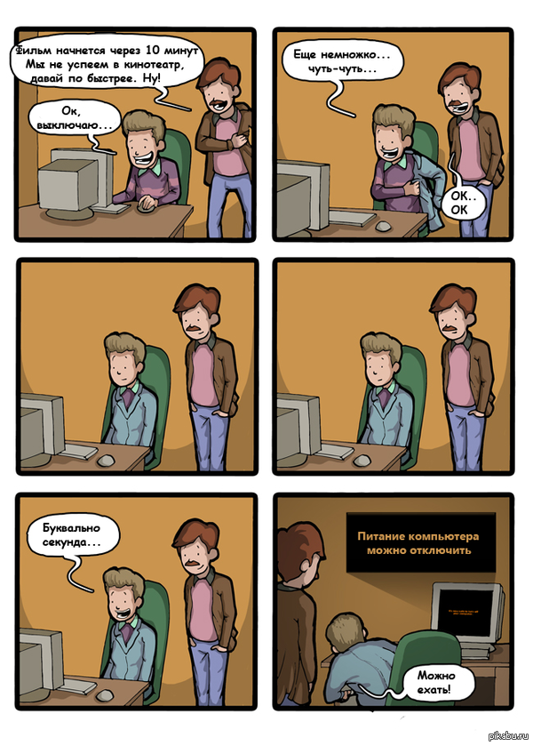
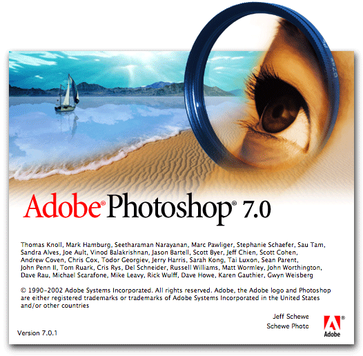
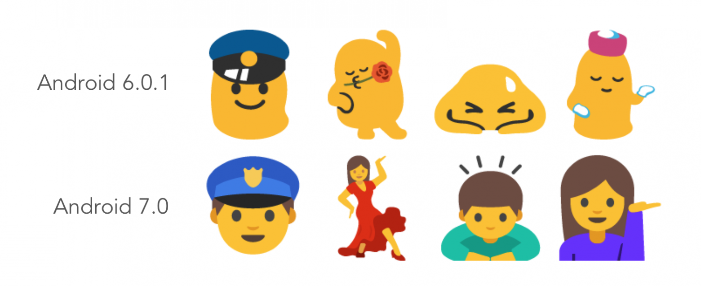
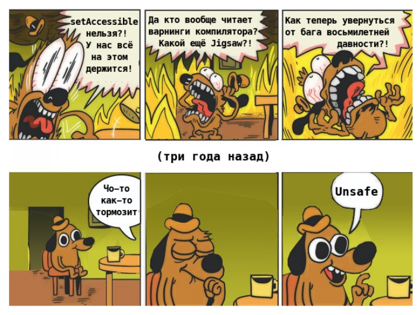

Есть типичная позиция, которую можно встретить на Хабре и не только: «хотя железо с годами всё лучше, человечество свело эффект на нет тем, что пишет софт всё хуже».
Мол, ядер в процессорах стало больше, но тормозит всё пуще прежнего. Electron и Slack — порождения тьмы, пришедшие лишить нас счастья и памяти. Мобильные приложения стали прожорливее, чем старые операционные системы. А в самих операционных системах уже толком нет прогресса, но почему-то они продолжают разбухать в размерах. То ли дело было, когда люди умели уместить ОС на дискету!
Скажу прямо: когда я вижу подобные заявления, у меня бомбит. По-моему, в них упускают целый ряд важных факторов. А в итоге ситуация напоминает классическую речь Луи Си Кея «Everything's amazing and nobody's happy»: всё стало удивительно хорошо, а люди сидят и жалуются.
Поэтому решил описать эти упущенные факторы. Поскольку текст получился резким, хочу подчеркнуть, что мнение сугубо моё личное (хоть я и ссылаюсь на конференции компании, в которой работаю).
Избирательность памяти
Известно, что существует ностальгический эффект «раньше трава была зеленее, а музыка лучше». Но, по-моему, у многих этот эффект принимает пугающие масштабы, когда ощущения совсем уж драматически расходятся с реальностью.
Я говорю о заявлениях вроде такого: «Почти всё на компьютере ощущается медленнее, чем в 1983-м». Судя по тысячам лайков, это не единичное мнение, а массовое.
almost everything on computers is perceptually slower than it was in 1983
— Gravis (edited) (@gravislizard) November 6, 2017
Первая моя реакция: «Ну и как в 1983-м ощущался стриминг 4K-видео?» То есть для начала давайте вспомним, что большинство сегодняшних применений компьютера раньше были невозможны, в том числе как раз из-за скорости. Когда-то фильм (даже не в 4K, а в 1080p) пришлось бы скачивать месяцами, а потом компьютер не смог бы его воспроизводить с 24 FPS. И как тогда сравнивать нынешнюю скорость с той, которая была бы такой запредельно низкой, что её вообще не было?
Вторая реакция: да, какие-то вещи, которые из командной строки переместились в GUI, могут там требовать больше времени. Готов поверить, что Word в 2020-м запускается медленнее, чем консольный редактор vi в 1983-м (лично сравнить не могу: впервые оказался за компьютером в 90-х). Но если для вас это настолько важно, можно ведь и в 2020-м для многих «задач из 80-х» использовать командную строку. Я прямо сейчас пишу этот текст в vim — прекрасный редактор, которому экосистема плагинов помогает не отставать от времени. Замечательно выглядит на современном ретиновом iMac: буковки стали очень чёткими, а отрабатывает по-прежнему моментально. В чём проблема-то?
Но самое главное даже не в двух названных вещах. Важнее следующее: по-моему, мы стали забывать, насколько компьютеры тормозили. Когда что-то начинает тормозить сильнее, мы это сразу замечаем — а вот когда что-то становится быстрее или проще, мы просто принимаем это как должное и забываем о прошлом.
Ко всем людям, пишущим «раньше всё было быстрее», у меня такой вопрос: вы вообще помните, например, вот это?

Признаюсь честно: я и сам об этом особо не вспоминаю. Когда сегодня выключаю компьютер, не задумываюсь о том, что двадцать лет назад сидел и ждал между нажатием кнопки в ОС и нажатием кнопки на системном блоке. Я просто принял как должное то, что теперь так не нужно, и забыл о том, что было иначе.
С временем запуска компьютера тоже произошли большие перемены. Сейчас я сажусь за аймак, нажимаю одну клавишу, и через секунду он готов к работе (спасибо SSD и спящему режиму). Когда в детстве я ждал загрузки Windows с HDD, вряд ли поверил бы, что доживу до такого.
«Когда в письме стопицот картинок, оно ужасно медленно открывается, иногда аж десять секунд!» Понимаю, что это может раздражать — но слушайте, в 2000-м для проверки почты я сначала минуту наслаждался трелями модема, потом ждал, пока неторопливо загрузится главная страница почты, а затем само письмо тоже подгружалось не моментально — и при этом в нём не было вообще никаких картинок, только текст. Сегодня такое открылось бы без промедления. Может быть, просто не надо забивать тысячей картинок средство коммуникации, которое было придумано для другого? И прежде чем заявлять «всё испортилось», давайте подумаем: сколько времени письмо с таким количеством картинок открывалось бы в 2000-м?
Или вот ещё одно воспоминание, затерявшееся во времени, как слёзы в дожде. В нулевых была популярна такая шутка: «Медленный компьютер — это когда знаешь по именам всех разработчиков Photoshop». Для тех, кому это ни о чём не говорит: тогда в России был очень популярен спираченный Photoshop, и при каждом его запуске россиянам приходилось подолгу смотреть на это:

А теперь сравните. Сегодня шутят «когда-то понадобилось два килобайта памяти для запуска человека на Луну, а теперь нужно два гигабайта для запуска Slack». Звучит хлёстко, но вы замечаете разницу? Сколько бы оперативной памяти Slack ни потреблял, с ситуацией «на запуске программы можно идти пить чай» пользователи не сталкиваются. Всё стало лучше, а мы это не заметили.
Или вот показательный исторический артефакт: серия Масяни «Даунлоад» (2002). Герои страшно переживают из-за дисконнекта, при котором придётся скачивать файл заново.

Обратите внимание: файл, который они скачивают, весит 591 килобайт. Персонажи переживают из-за необходимости заново загрузить полмегабайта. Это реальное положение дел в 2002-м.
Для сравнения свежий пример из жизни. У меня на Mac возникла маленькая техническая проблема, на Stack Overflow нашёл совет «установить Xcode и принять её условия использования». Моя реакция: странно скачивать 8-гигабайтную IDE для нажатия одной кнопки, но если поможет, почему бы и нет.
То есть размеры программ с годами возросли (во времена Масяни от «8-гигабайтной IDE» у людей бы волосы зашевелились), но загрузить их стало куда проще, и наша жизнь стала куда лучше.
Ну и последний пример в этой части — про «разбухшие мобильные приложения». Про это временами пишут возмущённые посты вроде «App sizes are out of control»: «с каких это пор LinkedIn стал занимать на телефоне 275 мегабайт?!» В 2018-м можно было прочитать жалобу «у меня после установки приложений остался всего гигабайт для фотографий».
Не стану врать, эти 275 мегабайт LinkedIn у меня тоже вызывают вопросы. Но мне вспоминается, как в 2010-м на Хабре написали, что у Альфа-банка появилось мобильное приложение. Оно весило 30 мегабайт — сегодня такой размер не вызвал бы вообще никаких вопросов. А тогда в комментариях писали:
Знаете, почему? В те времена российский пользователь мог ходить, например, с HTC Hero. Заглянем в его характеристики: «storage — 512 MB, 165 for applications». 165 мегабайт суммарно на все установленные приложения! В таких условиях приходилось постоянно выбирать, какие из них важнее, а без каких можно прожить. И чтобы установить 30-мегабайтное, пришлось бы снести сразу несколько других. Это была боль.
И если бы мы могли вернуться в 2010-й, подойти к людям, испытывающим эту боль, и сказать им фразу из 2018-го «у меня после установки приложений остался всего гигабайт для фотографий», думаю, нас бы побили. Эти слова звучали бы не жалобой, а издевательством и хвастовством.
Причём даже с 2018-го, когда эта жалоба появилась, ситуация успела улучшиться: сейчас бюджетный Xiaomi Mi A3 в базовом варианте снабжён 64 гигабайтами, так что после установки приложений явно останется куда больше одного свободного.
Да, приложения за 10 лет выросли в разы. Но объём места за то же время вырос в СОТНИ раз. То есть жить стало в десятки раз лучше.
И вы вообще помните, что такое было использовать смартфон в 2010-м и сколько там было разных болей «всё тормозит»?
- Маленький объём оперативки означал, что приложения постоянно приходилось запускать «с нуля», а не моментально переключаться на уже запущенное.
- А маломощные процессоры очень неспешно запускали их с нуля.
- Про скорость мобильного интернета и вспоминать не хочется.
- Скидывать фотографии на компьютер и бэкапить телефон приходилось по проводу, и во времена USB 2.0 это было мучительно медленно.
Использование смартфона выглядело как постоянное ожидание: что бы ты ни хотел сделать, это включает периоды «стоишь и тупишь». Если ты на улице и тебе понадобилась карта — стоишь на месте и сначала ждёшь, пока приложение соизволит запуститься, а потом ждёшь, когда карта в нём соизволит подгрузиться. И ещё ощутимо платишь за потреблённый при этом трафик.
По сравнению с этим всем мы сейчас живём в райских условиях, но при этом активно жалуемся. Это выглядит «проблемами первого мира» — что-то вроде «хочу почитать твиттер лёжа, держа телефон над лицом, но ведь тогда можно его случайно уронить на себя». Ну, сочувствую, но говорить в такой ситуации «всё стало хуже» выглядит неуважением и к прошлому, и к настоящему.
Общий вывод: громкие тезисы «раньше всё работало быстрее и лучше» оказываются очевидной неправдой. Похоже, что память ностальгически подсовывает их авторам только приятные части прошлого, подавляя неприятные. Очень многое было гораздо медленнее и хуже.
Непонимание «внутренностей»
Есть другая типичная ситуация. Люди говорят «софт всё более раздутый и тормозной, хотя для пользователя там почти ничего к лучшему не меняется» — и при этом не вполне в курсе, а что там происходит-то на самом деле.
В качестве маленького наглядного примера. В 2018-м был нашумевший текст Никиты Прокопова об «испортившемся софте», и в числе прочего там были слова «Сервисы Google Play, которыми я не пользуюсь (я не покупаю там книги, музыку или видео) — 300 МБ, которые просто сидят здесь и которые нельзя удалить».
Читая такое, хочется преисполниться праведным гневом, да. Но есть нюанс: вообще-то Google Play Services — это не про «покупаю книги». Туда входит много самых разных API, и, как сообщает Википедия, «All major Android services are controlled by Google Play Services». То есть, по всей вероятности, Никита активно пользуется этим софтом, сам не зная об этом — просто в Google дали ему название, сбивающее с толку.
Моя цель здесь — не раскритиковать конкретный пост, а показать общий подход: мы часто заявляем «приложения разбухли/затормозили без веских причин», не до конца понимая эти причины. В приложение что-то добавили, у его разработчиков есть подробная информация, что именно и зачем, а у нас её нет — но мы почему-то считаем себя компетентнее их в этом вопросе.
А ведь внутри много того, что неочевидно снаружи. Возьмём для примера текстовые редакторы: казалось бы, люди делают их с незапамятных времён на слабейшем железе, с ними всё давно ясно и там нечему тормозить, «что может быть проще». Поэтому снаружи это выглядит так: если что-то отрабатывает не мгновенно, то это криворукие разработчики разучились тому, что человечество уже умело. Но если погрузиться в тему (мы как-то публиковали хабрапост об этом), резко обнаруживается много неочевидных нюансов — и слова «что может быть проще» перестают выглядеть убедительно.
Или вот ещё. Новости о мобильных ОС часто вызывают такую реакцию: «За последние лет восемь там ничего полезного не сделали. Каждый год с шумихой выкатывают новую версию, которая весит больше предыдущей, но из отличий я вижу только новые эмодзи. В гробу я эти эмодзи видал, верните старую версию, она была лучше».

Слушайте, ну вроде же все айтишники знают по опыту: можно потратить кучу сил на обоснованный рефакторинг бэкенда, и пользователь этого даже не заметит, а можно за полчаса поменять в интерфейсе пару иконок, и среди пользователей начнутся бурные обсуждения. То есть мы знаем, что «снаружи» заметны только некоторые изменения, причём зачастую не самые важные. Почему же тогда мы не осознаём, что если нам самим в новой версии ОС заметны только эмодзи, то это больше говорит про нас, чем про ОС?
Возьмём, например, Project Treble из Android 8.0. Известно, что в Android есть большая проблема: пока айфоны легко обновляются на новые версии ОС, андроидфоны обычно навсегда остаются с предустановленной версией, потому что их производители не хотят морочиться. И в Google затеяли масштабную переделку всей архитектуры, чтобы упростить производителям жизнь и стимулировать апдейты. И хотя Treble совершенно не решил проблему целиком, статистика показывает заметное улучшение. То есть для борьбы с наболевшей проблемой в Google вложили много труда (отрефакторить такую махину — это вам не верхом на форточке кататься), и ситуацию получилось частично улучшить. По-моему, компания как раз и должна разбираться с наболевшими проблемами, всё правильно сделали.
А теперь скажите: если вы не мобильный разработчик, вы вообще об этом слышали? Когда вы впервые взяли руки телефон с Android 8.0+, это как-то сказалось на вашем мнении о новой версии? Вряд ли, потому что в первые месяцы использования телефона это вообще никак не проявляется для пользователя. Заметить можно только спустя время, когда выйдет новая версия Android. И только если производитель телефона окажется в числе тех, кого Treble сподвиг обновлять устройства. И даже в этом случае пользователь может не осознать, что в обновлении есть заслуга Google, и по-прежнему говорить «ничего полезного за восемь лет не сделали».
И такая ситуация типична — «подводная часть айсберга» вообще большая. Когда в Android ввели Adaptive Battery («умное» определение, каким приложениям можно есть аккумулятор в фоне), замеряли ли вы, изменилось ли энергопотребление вашего телефона? Когда Google Play Protect в фоновом режиме заботится о вашей безопасности, вспоминаете ли вы, что раньше этого не было? Когда добавили поддержку видеокодека AV1, задумались ли вы, что с высокой вероятностью за этим кодеком будущее и такая поддержка полезна? Или вы просто берёте в руки телефон, и эмодзи бросаются в глаза, а поддержка AV1 не бросается?
Уже после выхода этого поста появился прекрасный тред от lany о том, что софт разбухает во многом из-за обработки редких ситуаций. И что тогда получается: для 1% случаев, когда возникают эти ситуации, всё стало гораздо лучше — но 99% людей, не сталкивающихся с этими редкими ситуациями, не могут как следует оценить изменения.
Это пригождается крайне редко. Но это уже сотни килобайт в запакованном виде (часы теперь зависят от алгоритма раззипования) и мегабайты в распакованном. Разумеется, это всё надо регулярно обновлять. В часах проявляется механизм обновлений. Дальше високосные секунды.
— Tagir Valeev (@tagir_valeev) March 26, 2020
А из этого следует, что когда мы ругаемся скопом на все «разбухшие и тормозящие приложения», во многих случаях для этого были объективные причины. Где-то люди в рабочее время вдумчиво взвешивали все плюсы и минусы, обсуждали их друг с другом, и пришли к выводу «плюсы перевешивают». А потом приходим мы, понятия не имеем, что там было на весах, тратить время на вдумчивое изучение не собираемся, видим только изменившийся размер — и делаем уверенное заключение «всё испортилось».
Общий вывод: часть заявлений о «бессмысленно раздутом софте» вызвана ошибками непонимания. И делать такие заявления без тщательного исследования причин — не самая разумная стратегия.
Внимание к производительности
Заявления об «испортившемся софте» звучат так, будто раньше разработчики экономили вычислительные мощности, а сейчас они все плевать хотели на оптимизацию. Мол, важно лишь, чтобы работало — а что требования к железу получились высокие, так закон Мура как-нибудь всё разрулит. Если код медленно выполняется, жрёт память как не в себя и занимает много места — и так сойдёт, никто не станет переживать об этом и улучшать что-то.
Слушайте, ну это попросту неправда. В качестве отдельного примера: Facebook Messenger недавно переписали, и сообщается, что производительность повысилась вдвое, а размер уменьшился вчетверо. А к словам выше о том, что приложение LinkedIn весит 275 мегабайт — я сейчас проверил и увидел в App Store надпись «195.4 MB», похоже, его тоже успели уменьшить в полтора раза. То есть в обеих компаниях явно и задумались о потреблении ресурсов, и выделили для их снижения немало трудозатрат, которые можно было бы потратить на «пилить фичи».
А поскольку я по работе связан с конференциями для разработчиков и пересекаюсь с многими из них (причём из разных стеков), я вижу, какие темы их заботят. О чём они слушают доклады, о чём общаются и пишут посты.
И производительность — точно одна из таких тем. По названиям докладов вроде «Оптимизация времени запуска iOS-приложений» видно: разработчики готовы тратить 60 минут, чтобы послушать о миллисекундах.
Говорят о производительности везде — хоть в JavaScript-мире («Производительность JavaScript через подзорную трубу»), хоть в мобильной разработке («Как уместить в айфоне миллион звёзд»). Но больше всего говорят в бэкенде. Думаю, это потому что смартфоны пользователи покупают себе сами, а вот в бэкенде за вычислительные мощности платит компания, так что есть мощная финансовая мотивация оптимизировать.
Недавно я проделал простой эксперимент: открыл программу нашей Java-конференции JPoint и посмотрел, в скольки описаниях докладов встретится что-то о производительности. Позже из-за коронавируса мы перенесли конференцию на июнь, так что в программе возможны изменения, но результаты в любом случае показательные. Они такие:
- «Этот доклад будет про тюнинг производительности Producer»
- «Рассмотрим методы оптимизации файлового I/O»
- «Может, для одного из модулей вы хотите получить большую производительность, чем вы когда-либо сможете выжать из Java?»
- «Какие связанные с safepoint оптимизации делает HotSpot JVM? О чём стоит помнить разработчикам, чтобы избежать нежелательных пауз?»
- «Проект Валхалла, инлайн-типы и всё вокруг них, от программной модели до производительности»
- «Optimize query performance, throughput and memory consumption»
- «Доклад посвящен детальному разбору того, как происходит процесс записи в базу данных Apache Cassandra с точки зрения производительности»
Слушайте, если бы этот эксперимент я проводил как drinking game, то к его окончанию был бы уже пьян. Невооружённым глазом видно: Java-разработчиков волнует, как им делать свой код не просто работающим, но и быстрым.
Более того: зачастую это их даже слишком волнует! От людей, плотно занимающихся перформансом, я неоднократно слышал, что тут легко перестараться. Например, ради незначительного роста производительности люди используют какие-то грязные хаки, которые в итоге создают больше проблем, чем решают. Ну, про это было в прекрасном кейноуте Алексея Шипилёва на JPoint 2017, мы для Хабра делали расшифровку.

Подытожим: пока в интернетах сокрушаются «разработчики обленились и совсем перестали думать о тормозах», в реальности многие разработчики думают о них больше, чем нужно.
Осмысленность и целесообразность
А теперь, по-моему, самый важный тезис.
Да, приложения со временем стали требовать больше ресурсов, порой на порядки. Да, в проекты стали затаскивать куда больше, даже не слишком нужное, вместо того, чтобы тратить время на вычленение «строго нужного». Это правда.
Но я считаю, что выросшие приложения не делают сегодняшних разработчиков неумелыми дураками. Более того, всё наоборот:
Разработчики были бы дураками, если бы приложения НЕ выросли.
Представим мир, где железо в последние десятилетия развивалось как в нашем, а вот подход к разработке софта при этом не изменился. Программы там по-прежнему умещаются в объём дискеты, хотя сами дискеты уже никто не использует. Во имя производительности примерно всё пишут на С. Все разработчики постоянно спускаются как можно ближе к железу и знают каждое место, где можно выгадать пару байт. И хотя пришли ретиновые экраны, никто не стал детализировать иконки приложений, чтобы они не начали больше весить. В общем, праздник оптимизации и бережного подхода к ресурсам. Всё то, о чём жалеют сейчас как об «утраченном мастерстве».
Знаете, какое впечатление на меня производит эта картина? Большая семья вынужденно жила в одной маленькой комнате, поэтому научилась размещать вещи с точностью до миллиметра и овладела тайным искусством создания пятиярусных кроватей. А потом переехала в просторную многокомнатную квартиру — но по привычке заняла там только одну комнату, все остальные оставила пустыми. Люди по-прежнему сидят друг у друга на головах.
Вопрос: не кажется ли вам, что это безумие? Если появилась возможность дать каждому вдоволь пространства, то ради чего его экономить? Кому лучше от древнего мастерства пятиярусных кроватей, если при этом пригласить кого-то в гости некуда? Не пора ли овладевать новым мастерством выбора king size-кровати?
То же самое и в софте. Если в эпоху, когда даже у бюджетных смартфонов есть по 64 гигабайта, мы будем переживать «рантайм Kotlin увеличит наше приложение на мегабайт», то мы и превратимся в эту семью. Расслабьтесь, место для того и нужно, чтобы в нём что-то находилось. Если оно пропадает впустую, это никому не делает лучше. Если места стало много, и для чего-то понадобился рояль — значит, можно смело его ставить, не переживая о квадратных сантиметрах.
Slack — это и есть рояль. Окей, он ест много памяти, но слышали ли вы, чтобы не-айтишники жаловались на него, как когда-то жаловались на Photoshop? По моим ощущениям, у обычных пользователей уже достаточно пространства, чтобы этот «рояль» не мешал им «пройти по комнате». Да, можно заменить на пианино и сэкономить место. Но если живёшь во дворце, и с годами площадь дворца становится ещё больше, то зачем?
По-моему, из-за Slack переживают в основном айтишники, которым оперативка нужна для других тяжёлых задач. Но айтишники — это отдельная история: развивая квартирную метафору, это люди, у которых из квартиры сделана мастерская. Ну да, тут какой дворец ни предоставь, все комнаты окажутся заняты чем-то очень важным. И тогда рояль может мешать, можно ведь вместо него токарный станок поставить. Но большинство людей в мире живёт иначе, им дома не нужны токарные станки, и для их образа жизни ресурсов уже достаточно.
И в такой ситуации лихорадочно избегать всего, что занимает память, когда её уже стало много — это как с мобильными таск-менеджерами, где пользователи прибивают запущенные приложения, чтобы «расчистить оперативную память». Уже много раз создатели мобильных платформ говорили: «Остановитесь, безумцы. Система сама прибьёт приложения, если памяти станет не хватать, а до того-то их прибивать зачем? В чём смысл покупать смартфон с большим объёмом оперативной памяти, а потом держать её пустой и не пользоваться тем, за что заплатил?»
И ещё мне вспоминается история с «ошибкой 2000». Кто-то из айтишников середины XX века в старости вспоминал: «Мы были в числе породивших её. Мы тогда экономили каждый байт. И когда мы придумали, что можно год хранить двумя цифрами, а не четырьмя, ощущали себя очень умными. Мы сэкономили по два байта в куче мест! И только ближе к концу века стали ясны последствия».
Да, в то время записывать год двумя цифрами наверняка выглядело разумным решением. И оно прямо-таки воплощает в себе всё то, за что ратуют сторонники «бережного» подхода. Вот тут действительно дошли до предела в заботе о ресурсах.
Но потом, много лет спустя, другим людям пришлось потратить кучу ресурсов на то, чтобы разобраться с последствиями этого решения и предотвратить проблемы.
И теперь, когда сэкономленные два байта уже никому не помогут, а негативные последствия известны, было бы очень странным хранить год так.
Так вот: многое из того, что сегодня хочется воспевать как «разумное сберегание ресурсов», в будущем станет выглядеть такой же «экономией на спичках», которая потратила больше ресурсов, чем сэкономила. Например, потому что время разработчика — это тоже ценнейший ресурс, а его тут в расчёты часто не включают. Если вы упоролись по выравниванию данных, и ваше приложение стало чуть-чуть меньше и быстрее, но вы потратили на это неделю, которая могла бы уйти на полезную фичу, то вы сделали пользователю лучше или хуже?
Да, очень хочется ощущать «я умный и экономный, я умею сберечь ресурсы там, где другие ими разбрасываются». Это приятное ощущение.
И приятные ощущения — это важно. Если разработчика тошнит от проекта, в этом ничего хорошего, это будет бить по его мотивации и сделает хуже всем.
Но при этом надо уметь различать, где что-то полезное вообще для всех (напрямую делающее счастливее пользователей), а где приятные ощущения от почёсывания своего эго. И не выдавать одно за другое.
Примирительное заключение
Предвосхищаю возражения в комментариях: «а вот задача X стала у меня выполняться реально медленнее, чем 13 лет назад, верните мне мой 2007-й».
Поймите меня правильно: я не пытаюсь сказать, что таких задач не бывает. Бывают. И чрезмерное использование зависимостей бывает. И bloatware бывает. Когда я слышу, что в Photoshop есть редактирование видео, я испытываю такое же ощущение «ЗАЧЕМ», как и вы. Когда я читаю, что создание любого приложения с create-react-app сразу означает 4304 директории с 28678 файлами в них, у меня тоже возникает вопрос, не свернули ли мы куда-то не туда. Есть много реальных проблем, о которых стоит говорить.
Моя претензия лишь к тому, что в связи с этими проблемами возникает какая-то радикальная секта, верящая в скорый конец света из-за разрастания софта. В этой секте переписывают историю («раньше всё быстрее работало!»), недопонимают происходящее («а почему это Windows с годами так выросла, там же ничего особо и не поменялось»), говорят о разработчиках незаслуженные вещи («они не хотят ничего оптимизировать») и ударяются в крайность «давайте экономить каждый байт, даже когда это сделает пользователям хуже». Давайте не будем так делать.
Мои возражения радикальной позиции, конечно, тоже получились несколько радикальными (просто в противоположную сторону). К ним тоже можно придраться, и их тоже можно назвать сектой. Но цель этого поста не в том, чтобы каждое моё слово считали истиной в последней инстанции. Его цель в следующем: чтобы люди поменьше вовлекались в секты.
Главный вывод — скучный и банальный, но от того не менее правильный: всё зависит от конкретной ситуации. Оптимизации — это не абсолютное зло и не абсолютное добро. Они могут одновременно помогать и вредить. Есть ситуации, где оптимизации явно стоят того, и ситуации, где явно не стоят. И есть промежуточные ситуации, где разные люди по-разному расценят «стоит или нет», и никто из них не будет более прав, и это нормально.
А если кто-то, включая меня, скажет вам иначе — это сектант, гоните его в шею.